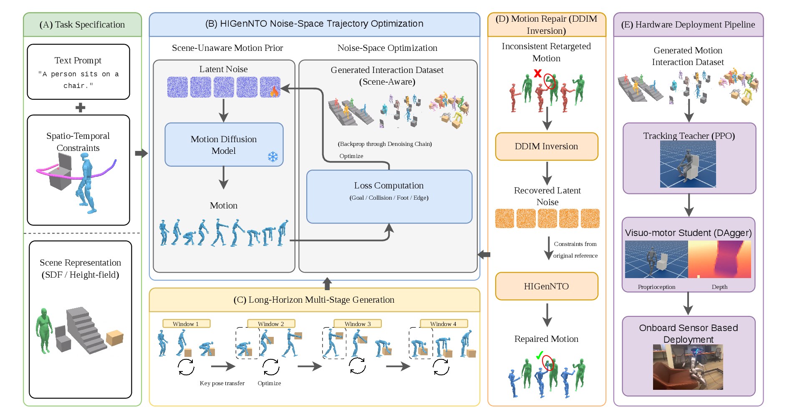
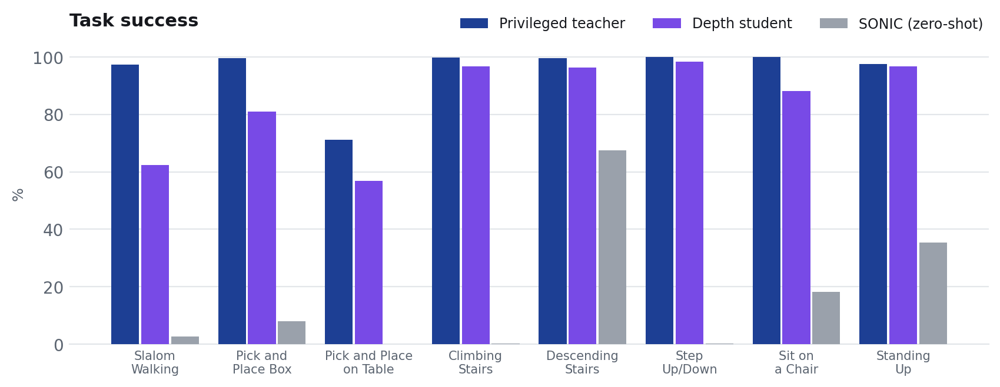
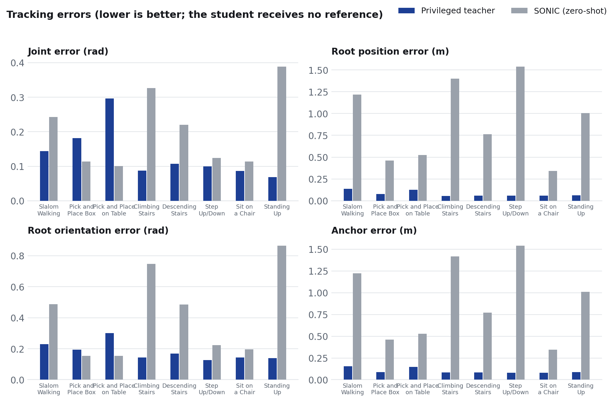

Real-world deployment

Depth-conditioned students deployed on a Unitree G1 from onboard depth and proprioception.
HIGenNTO synthesizes humanoid-scene interaction motion references by optimizing the initial noise of a pretrained motion prior under sparse contact and scene constraints, with no interaction motion capture.
A frozen, scene-unaware motion prior is made contact- and geometry-aware at optimization time: losses on sparse spatiotemporal contact and scene constraints are backpropagated through the whole denoising chain into the initial noise, with no retraining and no interaction motion capture.
Privileged teachers track the generated motion sequences in simulation; depth-conditioned students keep 61-92% task success from onboard sensing alone and deploy on a Unitree G1.
Tasks can be specified by a coding agent, which compiles task descriptions into prompt, constraint, and scene programs. It can also identify behaviors from a motion dataset and author new tasks, scene geometry included.

One formulation spans the task suite: the eight evaluated tasks and four further behaviors whose task programs were written by a coding agent. One accent color per task.
For each task, a privileged teacher tracks the generated references; it is distilled into a depth-conditioned student that observes only onboard depth and proprioception. SONIC, a general-purpose scene-blind motion tracker run zero-shot from released weights, is shown for context. In the teacher and SONIC videos, the blue humanoid (and box) is the generated reference the policy is tracking.


Task success and tracking errors across the eight evaluated tasks.
Depth-conditioned students deployed on a Unitree G1 from onboard depth and proprioception.
Citation will be added upon publication.